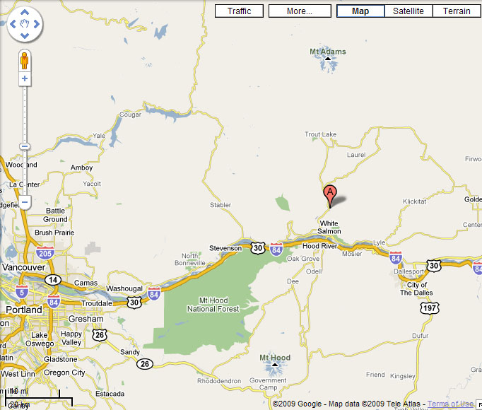

Husum people and culture
Ellen Saluskin (X̲ápt'iniks Sawyalílx̲)
Topics Covered in Text
- Elders 0:00
- Husum people 2:01
- Food preparation 11:44
- People along the river 21:05
- Killing Indians from steamboat 26:10
- word—
- false start (no word or phrase translation provided)
- wo[r]d
- [] overwrites a speech error; here, [r] is the intended sound
- wor(d)
- () supplies a sound or sounds accidentally left off by the speaker; here, the word should contain the sound (d)
- ?
- (in word translation line) Virginia didn't know what the word meant. Sometimes she recognized the word, however, even if she didn't know what it meant.
—sayks.Anakúíchicháwshíx̲iwáyx̲tisha,recorder.becausethisnotgoodit's runningshapawach'aktpamá'...because this recorder isn't running right.'
Kukútɬ'k-kutɬ'kanakúshirecord isha,cháwtɬ'áax̲w.andpieceslikeishapáwach'akshanotall'It's like it's recording pieces, not everything.'
Ku,kussɨ́nwix̲a,tɨmnanáx̲ɨnx̲apatúkináwanakúsh(á)wtik'a.andand Italktell storiesabout some thingsnowjust likeunimportant'And I'm just talking about some things, telling some little stories.'
Anakúnch'ínch'imatyaáwíchnatiichámpapawyáninx̲anamíimi,anakúshmíinpawitɨmnanáx̲ɨnx̲anapmákichnamátiichampamámíshíchiiwachámíimitiichám.whenelders actuallynowhereon landthey used to travel aroundlong time agojust likewherethey used to tell storiestheyabout thisabout countryhowhereit waslong agocountry'When the elders used to travel around this land a long time ago, they would tell stories about how it used to be here a long time ago.'
Anakúpmákpawyáninx̲ana,pawisalílx̲ana,tɬ'áax̲w míshtúunpa'áwix̲anatkwátatnan.whentheythey used to travel aroundthey used to go huntingall kinds ofthingthey used to look forfood'When they travelled around hunting, they used to look for all kinds of food.'
Kukuumánkanakúshpawitɨmnanáx̲ɨnx̲ana.andabout thatjust likethey used to tell stories'And that's what they used to tell stories about.'
Míshíchnatiichámpapawyáninx̲anamíimi,mɨnánpawshwáwt'kwx̲ana,mɨnánanakúsh túnpakúx̲anamɨt'úlaantúun,íkw'akáwachatɨmnanáx̲tyawpiimínk.howhereon countrythey used to travel aroundlong agowherethey campedwherethings likethey used to makedog salmonthingthattheirs wasstorytheir'They told stories about how they used to travel around, where they used to camp, where they used to catch things like dog salmon.'
Ku,kucháwk'aawkuumánktɬ'áax̲w misháp'x̲nanix̲akw'pɨ́nkwitɨmnanáx̲t.butno longerexactly from that (time)all kinds ofrecall one'sthat aforementionedstories'But I don't recall all their stories from that time.'
Anakúshpiimínktyapmáktyapashúkwaashanakw'pɨ́nk.just liketheirs actuallythey actuallythey knewthat aforementioned'It's like that was theirs and what they knew.'
Kushwácháwínch'akuumánx̲i.and Iamnotpoor mefrom that (time) also'Also, I'm not from that (era).'
Anakúshnashmaykpaylikimátyawá.just like=Imore recent time actuallyam'I'm from a later (era).'
Ku,kushcháwtɬ'áax̲wáp'x̲nanishakw'pɨ́nkwitɨmnanáx̲t,ana mishmíshpawyáninx̲anaíchnamɨnántiichámpa.andand Inoteverythingremember itthat aforementionedstoriesin whatever mannerthey used to travel aroundon thissomewhereon land'And I don't remember everything that they told, about how much traveling they did around this country.'
Kukúshx̲ipáyshttúushk'atíiniwyáninx̲anax̲iíchnatiichámpa.andsamemaybesome otherpeopleused to travel around alsoon thison country'And it's the same with other people who came here and traveled around this land.'
Kukw'pɨ́nkawkúiwátɬ'áax̲wíchi íkuuktíintiichámpa.andthat aforementionedthenarealltodaypeoplein the ground'Now those people are all dead.'
Cháwk'ashíniwáánach'ax̲iíchi íkuukwák̲'ishkwnamánk,ttáwax̲ttíin.no longeranyoneisagaintodayalivefrom thatancestrypeople'There's nobody left alive from those people from that time.'
Kutasháw—and=wenow'Now we—'
Anakúshnashwacháláakanakúshiksíkstyaáw.just likewhen.Iwasmaybejust likelittle actuallynow'And then I was a little girl.'
Láaknashmɨ́ɬwachápax̲at'umáatmɨ́ɬanwíktuu míshnashkwamɨ́ɬwachá.maybe=Isome quantitywassevensome quantityyearor else=Inot knownhow manywas'I might have been seven years old or so.'
Kutashwínama.and=wecame'We came here.'
InmíkáɬaX̲ax̲ísh,piiníknatashanakúshwyáninx̲ana.mymaternal grandmotherwith her=wethenused to travel around'I used to travel around with my maternal grandmother X̲ax̲ísh.'
Inák̲'ninx̲anaashinák.she used to take me aroundme'She used to take me around with her.'
KutashwyánawimaíkwnaHusumpa,ana kwnákiwachákáatnamɨníitTiinmamí.and=wearrived herethereat Husumwherethere waslonghouseIndian'We arrived there at Husum, where there used to be a Native American longhouse.'
KáatnamáwachaWaashatpamá.longhouseit wasfor Wáashat'It was a longhouse for the Wáashat (religious service).'
Pawáashax̲anax̲ashkwnákSapálwitpa.they used to dancemust bethereon Sunday'They must have danced (had services) there on Sundays.'
Tíinmapápawyak'ukx̲ana.peoplethey used to gather'People would gather there.'
Kushkwnákák̲'inunatíinmaman,shíx̲shix̲ k̲'ínupaawínshma.and Itheresaw thempeoplehandsome (pl.)men'That's where I saw these handsome men.'
Áwtɬ'áax̲wpawáíchi íkuuktɬ'yáwyikwmáktíinma,ana kuumanáknashúyták̲'inunakwnáktiichámpa.nowallthey aretodaydeadthose peoplepeoplethose people who=Ifirstsaw themin thatin country'Those people that I first saw in that country are all dead now.'
Pawáashashawáptaspawáwitkwapaniisha.they're dancingfeatherthey're keeping time with arm'They danced with a feather (in their hand), keeping time with their arm.'
Nɨwítknikpapíkshawáptas.in the rightthey're holdingfeather'They held the feather in their right hand.'
Tɬ'áax̲wpawáíniix̲yiwapúuni.allthey aredressed updressed up in regalia'They were all dressed up in regalia.'
Íkushnashátk'inatíinmamankwnákwáashatyaw.thus=Ilooked at thempeopletheredancing'That's the way I observed those people there, dancing.'
Áwpawátɬ'áax̲wtiichámpaíchi íkuukkwmáktíinma.nowthey areallin groundtodaythose peoplepeople'Now those people are all dead.'
Áwnashák̲'inunaNáshat.now=Isaw him'And I saw Náshat.'
Iwyáwat'uyshakwnák.he's leadingthere'He was the leader there.' (VB: the big leader there)
Anakúshisápsikw'asapɨnmínkanakúshmyánashma,ana kwmákáwachax̲áymaɨsx̲ɨ́pmatúman.just likehe's teachinghisjust likechildrenthose people whohis weremale friendsyounger brotherssome people'He was teaching his children, those who were his male friends and his younger brothers.'
Kukuumanákisápsikw'asapítx̲makúshx̲i.andthosehe's teachingnephewsalso'And he was teaching his nephews also.'
Kúshx̲iawkúáyatmapawámɨ́ɬíkksma.similarlythenwomenthey aresomeyoung ones'Then there were some young women there.'
Awkushcháwtɬ'áax̲wáshukwiinishawaníktáyatmaman.then Inotallknow one'snamewomen'I don't know all the names of the women now.'
Kusháshukwiinishamɨ́laawaníktawínshmaman.but Iknow one'sfewnamemen'I remember a few of the men's names.'
Anakúshnashishapánamunx̲ana"íchiiwáɨkák."just like=Ishe made known relationthisisyour maternal uncle'She (grandmother) told me, "this is your maternal uncle."'
Náx̲shiwaníkshanaɨwínshWiláwilat.onehe was namedman'One man's name was Wiláwilat.'
Íkw'aknashishapánamunx̲ana"íkw'akiwáɨkák."that=Ishe would make known relationthathe isyour maternal uncle'She used to identify him to me, "that is your maternal uncle."'
Náx̲shiwaníkshanaɨwínshPatwánx̲.otherhe was calledman'Another man was called Patwánx̲.'
Tɬ'áax̲wshíx̲shix̲awínshmak̲'ínupa.allgood (pl.)menlooking'They were all good looking men.'
Kushɨ́nx̲ana"íkw'akiwáɨkák."and meshe would tell methathe isyour maternal uncle'And she would tell me, "that's your uncle."
Pítx̲nashpítx̲maashinmí.maternal unclemymaternal uncles=mymy'(They were) my uncles.'
Kukúshx̲ináx̲shiwacháLalpís.andtooanotherhe was'And there was another man, Lalpís.'
Kunáx̲shiwaníkshanaPíshk̲wa.andanotherhe was called'And another was called Píshk̲wa.'
Kunáx̲shiwaníkshanaKánashax̲.andanotherhe was called'And another one was called Kánashax̲.'
Kunáx̲shiwaníkshana—áwnashátɬmaynkiksh.andanotherhe was callednow=Ihave forgotten it'And another was called—now I've forgotten his name.'
Pítx̲nashwachá.maternal uncle=myhe was'He was my maternal uncle.'
Kuanakúshkwmákpa'ayáyanx̲anaSapálwitpapawáashax̲ana.andjust likethose peoplethey were having a good timeon Sundaythey were dancing'Those were the people that were socializing and dancing on Sunday (in that longhouse).'
Kuipápasapawiisklikx̲anaawkúanásht.andthey would do feather dance with each otherthenevening'And they would dance the feather dance with each other in the evening.'
Íkusháwachak̲k̲anáytíchnaíchitiichámpa.thustheirs wasbusinessherethisin country'That's the way they used to do things there in that country.'
Kukwnákpawachámɨ́ɬáyatmanch'ínch'ima.andtherethere weresomewomenelders'Then there were some female elders there.'
Áwnashcháwmíshtɬ'áax̲wataáp'x̲nanishawaníktkuumanáktíinmaman.now=Inotsort ofallveryrecalling theirnamethosewomen'Now I'm not going to remember the names of those women very well.'
Náx̲shiwaníkshanaáyatSkw'ílilay.oneshe was calledwoman'One woman's name was Skw'ílilay.'
Náx̲shiwaníkshana—uh,anakúshpawachámɨ́ɬtɬ'áksma.anothershe was calledjust likethey weresome quantityfemale relatives'Another was called— it's just like they were sisters.'
AnakúshNashatmíát—tax̲nútwaymaáwachakwmák.just likeNashat'sfemale relativeshis werethose people'It's just like they grew up with Náshat.' (VB: Ellen started to say áts 'man's younger sister'. They were probably his cousins.)
Ku,kukwmákkw'ɨ́nkpawáashashana.andthose peoplethat aforementionedthey were holding Wáashat services'Those were the people that were conducting the Wáashat services.'
Awkúpanáktutishanakw'ɨ́nkkáatnamíkwnakHusumpa.thenthey were supportingthat aforementionedlonghousethereat Husum'Then they were supporting the longhouse at Husum.'
Káatnamáwachaɨníit.longthey hadhouse'They had a longhouse.'
Kumɨ́ɬawkúpawachánch'ínch'itíinma.andsome quantitythenthey wereelderspeople'And there were some elders there.'
Anakúshnashcháwmíshatatɬ'áax̲wáshukwiinishawaníkt.just like=Inotmaybeveryallremember one'sname'I just can't remember all of their names.'
Smánatináx̲sháyatiwaníkshana.onewomanshe was called'One woman was called Smánati.'
Kukwɨnmínx̲iáwachapyáp.andwith that person's againhers wasolder brother'She had an older brother.'
Pu'úuɬiwacháɨwínsh,walptaykɬáskáw.blindhe wasmansingertalented'He was blind, a good singer.'
Iwacháɨwínshkpáylkitɬ'yáwyakw'pɨ́nkɨwínsh.he wasmanrecentlyhe diedthat aforementionedman'He just died recently.'
ÍkwnakáwachaHusumpanisháykt.theretheirs wereat Husumresidence'They lived right there at Husum.'
Kuíchi íkuukkushawkúcháwk'aáshukwaasha,mɨ́ɬawkúpawáíchi íkuuk,kwnamánkwák̲'ishmyánashmaíchnatiichámpa.andtodaythenthen=Ino longerknow themhow manynowthere aretodayfrom thatalivechildrenin thisin country'And now today I don't know them, how many there are today, or how many children are still alive from that group of people.'
Cháwnashawkúmúnáwishukɨnx̲a,anaawkúpawí'amanishaanakúshk̲a'áattúumanáwaawínshma.not=Itheneverrecognize themthe ones whothenthey're taking husbandslikeunknownsome peopletheirs aremen'I just can't recognize them any more, the ones who are taking husbands we don't know.' (marrying people outside of their cultural group)
Kushkwɨnkínkawkúcháwáshukwaashashimínawkúpawíwamyánashmaáak.and Ithereforethennotknow themwhosethenthey arechildrenthat'That's why I don't know whose children they are there.'
Íkw'aknashawkúák̲'inunx̲anaíkuumanaktíinmaman.that=Ithenused to see themthose peoplepeople'Those are the people I used to see.'
PawáashashakwnákSapálwitpa.they're dancingthereon Sunday'They danced on Sunday.'
Anakúshpawát'ashakiwkíwlas,ɬíikw'ipawáashasha.just likethey hitdrumall daythey're dancing'They beat the drum and danced all day.'
Anakúshpawíi'uyx̲anamún9o'clock.just likethey used to startsome time'They used to start around 9 o'clock.'
Kupawáashax̲ana1 o'clock yaw.andthey used to danceuntil 1:00'And they would dance until 1 (p.m.).'
Kupatkwátashakuán[a]ch'aawkúpawáashashaykshanáshtikan.andthey're eatingandagainthenthey danced tountil evening'Then they would eat, and dance again until evening.'
Uuwáaɬaáwmíshtúnpak̲áɬk̲'iwishaámchnikSapálwitpa.orelsenowmaybesomethingthey're stopping and playingoutsideon Sunday'Or maybe they'd have some recreation outside on Sunday.'
Íkw'akáwkwnáx̲ipatx̲ánax̲anaTwináshat,kuPíshk̲wa.thatnowtherethey used to beand'And that's where Twináshat and Píshk̲wa used to be.'
Kushák̲'inunx̲ananch'íɨwínshWalahí,iwaníkshanaWalahí.and Iused to see himbigmanhe was called'And I saw one big man there named Walahí.' (VB: Joe Jay Pinkham's step-great-grandfather)
Kwɨ́nikMúx̲nɨmknikitx̲ánax̲ana.from therefrom Múx̲nɨmhe was'He was from Múx̲nɨm.' (VB: Virginia thinks this may have been Lyle.)
Iwyánawix̲anakwnákkuáyatpɨnmínkX̲itwaní.would comethereandwomanhis'He and his wife X̲itwaní would come there.'
Kuíchiiwyánawix̲amaTumáyatawkúkwnáx̲ipɨ́nch'a.andthisshe used to comethenthere toopoor her'And Tumáyat used to come also.' (VB: She was Upper Cowlitz too.)
Íkw'akáwSapálwyanatpawyánawishaíkuunipápawyak'ukshaawkútíinma.thatnowSunday servicethey cometherethey're gatheringthenpeople'People used to gather there for the Sunday services.'
Kushcháw múnpx̲wínx̲anakuíchmatíinmatɬ'áax̲wpanáamta,anakúshtɬ'áax̲wpatɬ'yáwita.and Ineverused to thinkandthesepeopleallthey will disappearjust likeallthey will die'And I never used to think that these people would all disappear, that they would all die.'
Anakúshx̲láktíinma,pawacháshíx̲shix̲tíinma.just likemanypeoplethey weregoodpeople'There were sure a lot of good people there.'
Anakúwák̲'ishiwacháNáshat,kuanakúshpánaknuwishanashíx̲.whenalivehe wasthenjust likehe was taking care of themgood'That's when Náshat was alive, and he was taking good care of them.'
pa'ana-
Anakúshpának-waashashanasa-ana kwɨ́ɬSapálwit.they were dancing togethereverySunday'He was dancing with them every Sunday.'
Kupawachátɬ'áax̲wshíx̲kwmákanakúshtíinma.andthey wereallgoodthose peoplejust likepeople'All those people were good.'
Cháwpachíishana.notthey drink'They didn't drink.'
Cháw túnmíshchilwítpamíshana.nothinganysinthey did'They never sinned.'
Anakúshpawacháshíx̲.just likethey weregood'They were good.'
Kumúnkúshx̲iShapaláhyaktkwnákitx̲ánax̲ana,Shapaláhyakt.andsometimestootherehe used to stay'And Shapaláhyakt used to stay there too.'
Pɨ́nch'aanakúshiwínax̲amaWɨshx̲ammíknik.poor himjust likehe used to comefrom Wishram people's place'He used to come from Wishram.'
Kumɨ́ɬpawacháawínshmaWɨ́shx̲ammakupawyánawix̲amax̲iawkúíkwɨnk.andsomethey weremenWishram peopleandthey used to come here alsothenthere'Then there were other Wishram men that used to come here.'
Kuawkúanakúshpa'ayáyax̲anaawkú.andthenthey used to have a good timethen'Then they'd have a good time there.'
Káakɨmkuunákkáatnamnanpatx̲ánax̲ana.fullthatlonghousethey used to be'They used to fill up that longhouse.'
Íkushnashúytátk'inatíinmamaníchnaHusumpa,ashkúwacháanakúshiksíkspt'íniks.thus=Ifirstsaw thempeoplehereat Husumwhen Iwasjust likelittlegirl'That's how I first saw these people at Husum when I was a little girl.'
Kushák̲'inunaíkushíkw'akayáyatpawáashasha.and=Isaw themthusthatbeautifulthey're dancing'I used to see them, and I used to admire the way they danced.'
AnakúshSapálwitpapatwánashashíx̲nanɬkw'ínan.just likeon Sundaythey observegoodday'They observed Sunday, the good (holy) day.'
Kúshx̲iawkúpaká'uyx̲anawíwnu.similarlythenthey used to hold feasthuckleberry'And they used to hold a huckleberry feast.'
Anakútashkwɨ́nikwínax̲amacháwká'uyikutashíkwnakawkúwyánawix̲ama.when=wefrom thereused to comenothaving held feastand=wetherethenused to come'Sometimes we'd leave our country and arrive there at that longhouse.'
Kutashíkwnakawkúká'uyx̲anaHusumpa.and=wetherethenused to hold feastat Husum'We used to have our feast at Husum.'
Patkwátax̲anaawkúwíwnunanpaká'uyx̲anakunúsux̲paká'uyx̲ana.they used to eatthenhuckleberrythey used to hold feast forandsalmonthey used to hold feast for'They would hold a feast for huckleberries and also for salmon.'
Kutúnáwnɨkwɨ́ttúnáwayaamashmíkukwnákawkútɬ'áax̲wpatkwátasha.andsomenowmeatsometheirs isof deerandtherethenallthey're eating'And they ate deer meat there.'
Íkw'akawkútmaanítaywíwnunaníchna.therethenready to pickhuckleberryhere'Then (they were) ready to pick huckleberries here (at Trout Lake).'
Pawshánax̲amaawkúanakúshpanáwnak̲'ix̲anakupawíwshanax̲amaawkúwíwnuyaw.they would move herethenjust likethey used to finishandthey would move herethento huckleberries'Then they would all move up here to huckleberry (patches).'
Kupawínishaykx̲anaawkúíchnatɬ'áax̲wpa,áwiwaykanisháyaasawkú.thenthey used to staythenhereeverywheretheirs were scatteredcampthen'Then they would camp all over there on the berry patch.' (VB: re áwiwayka: further than áwiwacha)
Íkushpawachátíinmamíimiíchnatiichámpa.thusthey werepeoplelong time agoin thisin country'That's the way people were a long time ago in this part of the country.' (VB: i.e. at Husum)
Anakúshtɬ'áax̲wha'áayáwachawyánint.just likealltranquiltheirs wastravelling'They traveled around with no problems.'
Ha'áaynisháyktpa'anísha.tranquilresidencethey're making'They had no problems settling down and making a home.'
Kukwnákawkútɬ'áax̲w túnpatkwátashaawkúana túnpatk̲'íx̲sha.andtherethenall kinds ofthey're eatingthenwhateverthey want'They ate all kinds of food, whatever they needed.'
Chnamánkmatíinmaanakúshchɨ́nikHusumknik,kuawkúíchianakúshwanapáynknch'ípa wánapa.local peoplepeoplejust likefrom herefrom Husumandthenthisjust likeon riveron the big river'There were people right here from Husum, and from the (lower) Columbia River.' (VB: Klickitat, White Salmon, Little White Salmon, and Wind (River?)
Kúshx̲iawkúpaháykshakupawɨ́npshanúsux̲kupanákɬtx̲shamshawkú.similarlythenthey go downandthey getsalmonandthey bring up herethen'They would go down (to the Columbia R.) and bring up salmon (to the berry field).'
Íkushnashák̲'inunaúytíchnatíinmamankushwachák'awyáíx̲wi,ínkpt'ínikskúuk.thus=Isaw themfirstherepeopleand IwasyoungstillIgirlthen'That's the way I first saw these people, when I was still a little girl.'
Anakúshnashlaa'ak-láa'akáp'x̲sha.just like=Iforgetting piecesremembering it'And I'm just remembering here and there.'
Íkw'akáwnáx̲sháyatáwachaNashatmítax̲nútway.thatnowonewifehe hadof Náshatfemale peer'And Náshat had one wife.'
IwaníkshanaLáwshlay.she was called'Her name was Láwshlay.'
Áwpáyshpawácháwk'aíchi íkuukkwnamánkttáwax̲t.nowmaybethey areno longertodayfrom theredescendant'I don't think there any descendants from those people anymore.'
Anakúsháwpáyshtɬ'áax̲wcháw wíyatpatɬ'yáwisha.just likenowmaybeallalmostthey're dying'They might have almost all died out now.'
Páyshpawámyánashmamɨ́ɬkumɨnán-mɨnanpawáwíyat-wiyatchɨ́niktiichámknik.maybethey arechildrensomeandhere and therethey arefar (pl.)from thisfrom land'There might be some children, but they're probably living far away from here.'
Náx̲shnasháykshanáx̲shiwáMontanapa.one=Ihear itoneisin Montana'I hear one's in Montana.'
Kunáx̲shiwáLápwaypa.andoneisin Lapway'And one's in Lapway.'
Kupáyshíchichɨ́naiwáHood River paíx̲wiinisháatwa.andmaybeherethis sidethere isat Hood Riverstillshe lives'And I think there's someone still living at Hood River.' (Kl. chɨ́na = Yak. chɨ́nik)
IwaníkshaWáx̲lamɬtx̲chishkíin,kuiwaníkshashyapumamíkiwaníktkiHazel.she is calledSahaptinandshe is calledin Englishname'Her Sahaptin name is Wáx̲lamɬtx̲, and her English name is Hazel.' (VB: Wáx̲lamɬtx̲, lit. flattened trees lying uphill. Virginia used to call her Mrs. Queampts [kwímps].)
Íkw'akáwlaxsímk'a.thatnowone only'Now there's only one more.'
Kwnamánkiwáanakúsháyatnch'í.from thereshe isjust likewomanprominent'She's a prominent woman.'
Kula'áaktúnishúkwaashatɨmnanáx̲tpɨ́nch'a.andmaybesomethingshe knowsstorypoor her'Maybe she knows some stories too.'
Kuitɨmnanáx̲tax̲naymíshkiníchnapɨ́nch'aanakúshpiimikínktíinki.andshe could tell storyhowherepoor herjust likeabout themabout people'Then she could tell a story about her own people.' (Virginia asked her and she refused.)
Anakúinmíyawwáa'awtyaishúkwaasha,tɨmnanáx̲tpɨ́nkíchnaanakúshichnamákiHusumpamáki.becausethan memore actuallyshe knowsstorysheherejust likeabout thisabout Husum'Because she knows way more than I do, all those stories about Husum.'
Íkw'aknashsɨ́nwisayksnáx̲sh.that=Iwas going to tellone'That was one story I wanted to tell.'
Íkw'aknashawkúanakúsháwyap'x̲shamsh.that=Ithenjust likekeep remembering it'And now I'm kind of remembering a few more things.'
Íkw'aknáx̲shiwaníkshanaáyatTsálisx̲aw.thatoneshe was calledwoman'There was one woman named Tsálisx̲aw.'
Íchnaanakúshwyánch'iiwachá.herejust likeeldershe was'She was an elder here.'
Isɨ́nwix̲anatamánwitpatúpan.she used to talkabout politicsabout something'She used to talk politics.'
Áwatímashpapáyshsɨ́nwitmɨnáníchna.she hason papermaybespeechsomewherehere'I think she has some speeches recorded somewhere.'
Kukwnínkawkúpawámɨ́ɬman.andfrom thatthenthey aresome quantity of people'And she has some (descendants).'
Náx̲shiwacháTwináshat.onewas'One was Twináshat.'
Kunáx̲shiwacháWaptaɬá.andanotherwas'And another was Waptaɬá.' (VB: Gladys's ancestor)
Íkwmakawkúíkw'akpawacháanakúshchnamánktíinma,kukúshx̲iWáksaspam.those peoplethenthatthey werejust likelocalpeopleandsimilarly'Those people were from there, and also Wáksaspam.'
Kuíkw'akanakúshTwinashatmípápmaáwacha,mɨ́ɬ.andthatjust likeTwináshat'sdaughtershis weresome quantity'And those were Twináshat's daughters.'
Íchnaanakúshpawínishaatuna.herejust likethey lived'They lived here.' (at Trout Lake?)
Kuáwpáyshtɬ'áax̲wpawyatɬ'yáwishakwmák.andnowmaybeallthey keep dyingthose people'I think they've all died now.'
Áwnasháykɨnx̲aáwwreckpakúshamíshpamíshakupatɬ'yáwishaawkú.now=Ihear itnowthey're doingwhatthey're doingandthey're dyingthen'I hear they've been in a car wreck and they're dying from that.'
Anakúshawkúcháw wíyatpáyshpawachácháwk'atúumaníchnaanakúshkwnamánkma,ana kwmákanakúshíchnapawyáninx̲anatíinma,ichnamánkmaanakúshíchi.just likethenalmostmaybethey areno longerpeopleherejust likefrom thosethose people whojust likeherethey used to travel aroundpeoplelocal peoplejust likehere'I don't think there's any more alive from those people that used to travel around here.'
Kuáwcháw wíyatiwátálx̲íchitiichám,wanapáynk.andnowalmostit isemptythisareaalong the river'Now this area is almost empty along the (lower) Columbia.'
Kukúshx̲ityaHusum,cháwk'aanakúshshíntíiniwánɨ́mnɨwit.andalso actuallyno longerjust likesomeonepeoplethere arereally'There's really no people left at Husum anymore.' (VB: There are descendants living at White Salmon, Lyle and along the Columbia R.)
Láakpawámyánashmakushcháwáshukwaashaínk.maybethey arechildrenbut Inotknow themI'There might be children but I don't know them.'
KupawáíkwnaYákmupakupawámɨ́ɬmyánashmatyaáw.andthey aretherein Yakimaandthey aresomechildren actuallynow'There are some children over in Yakima.'
Anakúshcháwtúpanmísháwapx̲wít.just likenotabout anythingmaybethere isthought'They don't seem to care about anything.'
Anakúsh,anakúsháwwámyánash.just likenowarechild'That's how children are (nowadays).'
Cháwpapx̲wíshamísh tún.notthey thinkanything'They don't think about anything.'
Kupáyshcháw túnpashúukwaasha,anakúshichnamátiichampamá.andmaybenothingthey knowjust likeabout thisabout land'They don't know anything about (the history of) this place.'
Íkw'ak,nashtɨmnanáx̲shaíkushíchnaiwachátíinmíimi,anakúshnch'ínch'itíinttáwax̲t,ana kw'ɨ́nkishúkwaashanaíchnatiichámpaanakúshtúnátaw-ataw.that=Iam talkingthusthisit waspeopleold timesjust likeelderspeopleracethe aforementioned thatthey knewin thisin placejust likesomethingimportant pl.'That's why I'm talking about the old times at this place, about the old people, those who knew important things about this place.' (VB: Ellen is implying that they knew about important sites there that might not be publicly known.)
Íchiáwáwachachiimítiinmamíashkuumanákáwiwaniksha.herenowtheirs wasof theseof peoplewho Ithemam naming them'Those were those peoples that I was just naming.'
Íkwmakíkw'aktíinmapa'aníx̲anaíchibasket,nch'ínch'ibasket.those peoplethatpeoplethey used to makethisx̲láambig (pl.)x̲láam'Those are the people who used to make those big baskets.'
Pax̲níx̲anamɨ́ts'aynancedarnmímɨ́ts'ay.they used to digrootts'apx̲ɨnmíroot'They used to dig the cedar root.' (ts'apx̲ɨnmí 'of cedar')
Pax̲níx̲anakuunák.they used to digthose'They used to dig that.'
Kukwnákawkúpapshalíix̲anachíishyawkupawích'x̲shaawkú.andtherethenthey would soak itin waterandthey split in stripsthen'Then they would soak them in water for a while, and then split them in strips.'
Kukw'ɨ́nkawkúpawích'x̲sha.andthat aforementionedthenthey split in strips'Then they would split them in strips again.' (VB: making them smaller)
Kupawalák̲'ikshaíkushkuunákawkúpawísx̲saawkúíkw'akawkúbasketpa'anísha.andthey tie themthusthatthenthey sewthenthatthenx̲láamthey make'And they would tie them up in bundles, and sew them, and make baskets.'
Íkushnashák̲'inunx̲anaíkuumanaktíinmamanashkuumanákíchiáyatmamanáwiwanikikshmɨ́ɬnch'ínch'imaman.thus=Iused to seethosepeoplewhich Ithose peoplethiswomenhave named themsome quantityelders'That's how I used to watch those elder women I was naming.'
Kupáyshawkúpawámɨ́ɬmyánashma.andmaybethenthey aresome quantityyouth'And maybe there's some young people.'
Kuláakawkúshkúshkpakúx̲a.andmaybeas isthusthey do'Maybe they do that too.'
Basketpawí'anix̲a.x̲láamthey make them'They make (cedar) baskets.'
Ku,kunamákYákmumacháwnatasháshukwaashaíkw'akanítbasket.andweYakama peoplenot=weknow itthatmakingx̲láam'And we Yakamas don't know how to make those baskets.'
Áwanakúshpmaksásimk'apanaknúwishaíkw'akanítbasketnaníkuunak.nowjust likeonly themthey're taking care ofthatmakingx̲láamnanthose'They're the only ones who are preserving that basket making.'
KuYákmuiwátíinkuibeadwork ix̲a.andYakama peoplearepeopleandpapáwaykx̲a k'pɨ́tki'Yakama people do beadwork.' (papáwaykx̲a k'pɨ́tki 'they do beadwork')
Beadworkix̲atúnɬk̲'ámaníx̲akúshx̲itúnibeadwork ix̲anatúnitk̲'íx̲ɨnx̲a.papáwaykx̲a k'pɨ́tkisomemoccasinmakesimilarlysomepapáwaykɨnx̲ana k'pɨ́tkisomewant'They bead moccasins and whatever they want.'
Ttúushíkushiwámyánashtún.somethusthere isyouthsome'(Even) some of the young people do that.'
I'aníshalegginstúnmoccasinstún,kúshx̲itiewápshashaypinákashtktaykuaníshíkw'ak.makingnyáchthingsɬk̲'amthingssimilarlyfor braid wrapfor tying selfandcraftthat'They make leggings, moccasins, braid ties and things like that.'
Íkw'akáwakútkutíkushYakmuunmí.thattheirs isworkthusYakama people's'The Yakamas do that work.'
Anakúshpiná-,pináwapawashapɨ́nkaníshapɨnmik'aláaywapáwatpináwapawatay.just likedecorating selfhe/shemakingjust for herselffor dressing upfor dressing oneself up'They make things for themselves to dress themselves up in.' (costumes to wear)
Kuíchnaktiichámpakuaníshabasket,iwí'anishabasket.andin thisin placeandmakingx̲láammaking pl.x̲láam'And over here (in Klickitat) they make (cedar) baskets.'
Kw'pɨ́nawkúíkw'akáwapɨnmínch'aanakúshpina'yax̲núutatúnkwɨnkínkawkú.that aforementionedthenthathavetheirjust likesupport themselvessomethingwith thatthen'That's what they prospered from.'
Íkushiwátíinanakúsh.thusarepeoplejust like'That's how people were.'
Cháwtɬ'áax̲wishúkwaashatúnanít,náx̲shtíin.Cháw.notallknowsomethingmakingonepeopleno'One person doesn't know how to make everything.'
KuiwáShíwanishtíin,anakúshIdahoknik,kuishúkwaashawáp'at,wap'aníikianítsápk'ukt.andisNez Percepeoplejust likefrom Idahoandthey knowweavingby means of weavingmakingbag'The Nez Perce people from Idaho know how to weave, making (cornhusk) bags.'
Iwáp'atashíx̲shix̲sápk'ukt,íkw'akShíwanishishúkwaashaíkuunakwáp'atnan,anakúshcornhusk bag.they will weavegood pl.bagthatNez Percethey knowthatweavingjust likewáwx̲pa'The Nez Perce weave nice bags like that.'
Íkw'akíkushiwátíin.thatthusispeople'That's how it is with people.'
Cháwtɬ'áax̲wishúkwaashaláxstíintɬ'áax̲wnan túun.Cháw.notallknowonepeopleeverythingno'One person doesn't know how to do all of these things.'
Kwnakwnákanakúshishúkwaashakutɬ'k-kútɬ'k,pɨ́nkana túnyaáwanísha.here and therejust likeknowpartshe/shewhatever actuallynowis making'Here and there there's this talent, whatever they make.'
KuiwáMontanakuaníshashíx̲shix̲íchitúnwapúutsápk'ukttún,cut beads kitúkiniwí'anisha.andisandmakingbeautiful pl.thisthingdecoratedbagthingts'ɨ́m k'pɨ́tkiwith somethingmaking them'And in Montana they make beautiful beaded bags.'
Kúshx̲ifeatherstúniwí'anisha.similarlywáptassomethingmaking them'And they also make things with feathers.'
Íkushiwátunx̲túnx̲iwátíin.thusisdifferent (pl.)ispeople'In this way people are different.'
Cháwiwákúsksim.notissame'They aren't all the same.'
Cháwishúkwaashakúsksimtúnaníttɬ'áax̲w.notknowsamethingmakingall'They don't all know how to do everything.'
Anakúshkwnakwnáktiichámpatúnx̲ishúkwaasha,túnx̲ishúkwaasha.just likehere and therein placedifferentknowdifferentknow'Here and there there are separate talents.'
Íkw'akmashtámunshaíkushnatashwátíinma.that=I.youam tellingthus=weareIndian people'I'm telling you, this is the way we Indian people are.'
Anakúshcháwnatashtɬ'áax̲wmaaníx̲akúsksimtún.just likenot=weallmakesamething'We don't all make things the same.'
Áwyanáx̲shtíintúnx̲anítanáx̲shpatiichámpa,náx̲shtúnx̲anítanáx̲shpatiichámpa.onlyonepersondifferentwill makein onein placeanotherdifferentwill makein anotherin place'One person makes something different in one place, another person makes something different in another place.'
Páyshsimawkúiwálsikw'ataiskúulitamíshkwnákkútkutpa.if onlythenwill imitatewill trainmaybeat thatat work'If only a person imitates somebody, (or) trains somewhere at work.'
Kuláakáwishúkwiinitax̲ikw'ɨ́nkkútkut.andmaybenowmight learn theirthat aforementionedwork'Maybe while they're working in this one different area, they learned the other (craft) work.'
Ku, kum—kwáak ku míshawkú,cháwnashawkútkw'íikwáshukwaashaínk,mísh,tíiniskúulix̲akuawkúmíshishúkwaax̲amíshkwáak.I don't knowthennot=Ithenstraightknow itIwhetherpeoplethey attend schoolandthenwhetherthey knowwhetherdon't know'And I can't tell you exactly how this is learned, whether people go to school or whether they just know it.'
Páyshpx̲winúutpaawkúisháatɨnx̲apáyshláakkucháw múnikútkutta.maybeapparentlythenthey lose interestifmaybeandneverwill work'Then they lose interest and maybe will never do the work.'
Kuyáanwayaawkúnáx̲shitkwápshanakshakwnákwísx̲tpatúpan.andpermanently actuallythenonelearns manual activityat thatat sewingat whatever'And then sometimes somebody will try it and will make a habit of doing it and then they'll just keep making those things, too.'
Kúshx̲i,basketpaanítpa.similarlyx̲láampamaking'It's the same way with basket making.'
Kúshx̲iana túniwáp'ashamíshimísha.similarlywhateverweavingwhatthey're doing'It's the same with whatever they're weaving.'
Kuáwkuáwashanáakíchiɨpápkutkutpamákwnamánk.andthentheirs areaccustomedthishandfor workfor that'Then their hands get used to working on those things.'
Kupáyshláaknáx̲shtíinilst'ayát'atax̲naykupáyshawkúisháattax̲nayawkú.andmaybeperhapsonepersonwould want to joinandmaybethencould lose interestthen'And maybe another person might want to join them but they would probably soon lose interest.'
Kúshx̲iíchi,tíinmapawí'anix̲ana.similarlyherepeoplethey used to make'That's also the way people here used to make things.'
Wánapa,íchnapatútshanúsux̲nan.on the riverherethey poundsalmon'Along the river here they used to pound the salmon.'
Patáwashanúsux̲nankupashúkwaashaawkúmíshpamítakuunákawkúanakúmúnpatáwata.they're barbecuingsalmonandthey knowthenwhatthey're doingthosethenwhenwheneverthey will barbecue'They barbecued salmon around the fire and they always knew what to do with it whenever they're barbecuing.'
Ák̲'inunx̲anaash.used to see them=I'I used to watch them.'
Patáwashatsá'at,kupawapákw'ɨlkshaawkú.they're bakinglittle whileandthey mash with fingersthen'They would bake it for just a little while, and then they would mash it with their fingers.'
Ɨpápkipawapákw'ɨlksha.with handthey mash with fingers'They mashed it with their fingers.'
Kuíchichmúkskinátx̲anax̲anusux̲mí,kucháw múnkuunákkupashapálst'atax̲nayíkwɨnawkúnúsux̲naníkuunakchmúkáakáwaskin.Cháw.andthisblackpsáits becomessalmon'sneverthereandthey don't mixthatthensalmonthatblackthatits ispsáno'Then this black skin that the salmon has, they would never mix that skin with that flesh.' (VB: it's bitter)
Awkútáaminwapanákpaashakwnínk.thenalwaysthey separatefrom that'They would always separate it from that (flesh).'
Kupáyshkwnákilst'átaíkw'akchmúkskinkutɬ'áax̲wawkúápshpshtakw'ɨ́nk.andifthatit will mixthatblackpsáandallthenits will become rancidthat aforementioned'If that part of the skin gets mixed with the flesh of the salmon it will all spoil.'
Áchaytaawkú.will spoil itthen'It will go bad.'
Kuawkúpatwápaashaawkútáaminwa,cháw múnchmúkskinkwnáx̲i.andthenthey separate with instrumentthenalwaysneverblackpsáthere again'So they always separate the skin with (some instrument).'
Ka'áwk(u)núsux̲wit-simáwluts'ákw'ɨ́nknúsux̲kukúshaawkúkw'ɨ́nk.but thenjust salmon (meat)nowredthat aforementionedsalmonthenare doingthenthat aforementioned'Then they take this red salmon meat.' (núsux̲wit-sim: meat only, not the skin; "selective part of the salmon")
Pa'íwtikshaawkúk̲'x̲lípa.they spread to drythenon tule mat'They dry it out on a tule mat.' (VB: dry in sun)
Áawiláxyawishakw'ɨ́nknúsux̲awkú.after a whileit driesthat aforementionedsalmonthen'Then that salmon would dry a while.'
leave a little while
Kupatamáskliksapatwátamaskliksaíkusháaw.andthey flip it overthey flip it over with instrumentthusafter a while'Then they flipped it over.' (VB: periodically turn over)
Iláxyawitaawkúkɨ́tukwɨnkínk,kúshx̲ipatk̲'íx̲sha.it will drythenfastwith thatsimilarlythey want'It dries fast that way, however (dry) they want it.'
Kupatamátɬ'umx̲shatúkinscreenkiawkúkucháwmux̲líyintúwinpákwiinita.andthey coverwith someatɬtɬíix̲kiso thatandnotflyanybothers it'And they cover it with some kind of a screen so the flies don't bother it.'
Íkushnashátk'inx̲anaanítyawch'láyawtíinmaman.thus=Iused to watchmakingsalmon bits in oilpeople'That's how I used to watch people making ch'láy.'
Íkw'akawkúch'láypa'aníshaíkushíkw'ak.thatthensalmon bits in oilthey're makingthusthat'That's how they make that ch'láy.'
Kukúshx̲iawkúánach'ax̲ipawapákw'ɨlksha.andsimilarlythenagainthey mash with fingers'And they would mash it some more.'
Kúshx̲ipawaɬíinishaáakchmúkskin.similarlythey reject one'sthatblackpsá'Similarly they would discard the black skin.'
Kupa'ílawalashayápaashnannusux̲míin.andthey rendergreasesalmon's'And they rendered the salmon oil.'
Pa'ílawalashak̲áaw.they renderseparate'They rendered the oil (out of the steelhead).'
Pashapák'paassashushaynshmíyápaash.they coolsteelhead'soil'They cooled the steelhead oil.'
Kukw'ɨ́nkpawíyax̲shashaawkútúpanlaputáaypapanaknúwisha.andthat aforementionedthey pour into pl.thenin somein bottlethey store'Then (after they rendered the oil from the steelhead) they put it in containers, keeping it cool.'
Cháwláx̲uyx̲tpaawkúáwa.notin heatthentheirs is'They keep them away from heat.'
Áwak'pɨ́spaíkushápatwashapálkw'ikiwɨ́tktiichámpa.theirs isin coolthustheirs setscoveredpart wayin ground'And they would put them part way into the ground to keep them cool.'
Aptúwa.theirs (pl. objects) set'(Then) they set.'
Kupanáwnak̲'ishaálaxyawishakw'ɨ́nkmúnnúsux̲íkush,cháwpáyux̲túwapákw'ɨlki,kukwnákawkúpayáx̲shashatúyawtkwsáyaw.andthey've finishedits is dryingthat aforementionedsome timesalmonthusnottoostronglypulverizedandtherethenthey pourinto someinto pan'Then when the salmon is thoroughly dry, not too pulverized, they pour it into a (larger) pan.' (VB: i.e. when the salmon is still flakey)
Kupayax̲ikáshashakwɨnkínkyápaashki,kupatwákutkutshaawkú,súx̲aasíchi,ilkwaasmísúx̲aas.thenthey pour into itwith itwith oilandthey stirthenspoonthiswoodenspoon'Then they pour the oil into it, and then they stir it with a wooden spoon.' (VB: or paddle)
Kukwɨnkínkpatwákutkutshaawkú.andwith thatthey stirthen'Then they stir it with that.'
Pa'aníshaawkúíkw'aktkwátatawkú.they're makingthenthatfoodthen'They make food out (of that).'
Íkushnashák̲'inunx̲anatíinmamantkwátatanítyaw.thus=Iused to seepeoplefoodmaking'That's the way I used to watch people making food (out of salmon).'
Kukúshx̲iawkúíkw'akch'láypapshátasha.andsimilarlythenthatthey put in container'Then they would put the ch'láy in a container.'
Pa'aníshaawkúíkushnusux̲mípsá.they makethenthussalmon'sskin'They line it with the (dry) salmon skin.'
Náaknipakúsha.aroundthey do'They put (the skin) all the way around.'
Kukwnákawkúpapshátashakw'ɨ́nkch'láypatútsha.andtherethenthey put it in containerthat aforementionedsalmon bits in oilthey pound'When they put it in the container, they pounded it.'
pa— pa— pa— pa—Papák̲'tkshaáwíkushpapshátashaíkuunch'láynan.they pack downnowthusthey put in containerthatsalmon bits in oil'They pack that ch'láy tightly in the container.'
Patwíix̲shak̲'áapawkúíkw'akpaníchkikshk'pɨ́syaw.they're coveringtightlythenthatthey storein cool'Then they would cover it and put it in a cool place.'
Cháw,cháwpaníchkiksháanpatúpan,áwanakúshk'páastiichámkukwnák kwnákpaníchch'láynan.notthey storein sunin anynowcoolgroundandhere and therethey storesalmon bits in oil'They don't store it in the sun, rather they store it here and there in cool ground.' (VB: They don't store it where the sun could hit it.)
Kúshx̲ikuunákíkw'akts'ɨ́pts'pnanawkúpanaknúwik'páaspa.similarlythatthatsalmon flakes in oilthenthey keepin cool'They also keep those salmon flakes in a cool place.' (VB: larger flakes, like bacon bits, not pounded, kept in oil in a bucket (swimming in oil))
Cháw múnpanaknúwiláx̲uyx̲tpa.neverthey storein heat'It's never stored in a hot place.'
Kw'ɨ́nkiwátashíx̲awkú.that aforementionedit will begoodthen'That will stay good.'
Cháw múnipshpɨ́shta.neverit will get rancid'It will never get rancid.'
Íkushíkw'akpa'aníx̲anatkwátattíinmanúsux̲nan.thusthatthey makefoodIndianssalmon'That's how Indians used to preserve salmon for food.'
Íkw'aknasháwawitɨmnanáx̲shaykshtíinmaman,ana kwmákanakúshpawacháíchnawánapapawínishaatuna.that=Inowtelling stories aboutpeoplethose people whojust likethey wereon thison riverthey lived'I'm just telling these stories about the people, those who lived along the river.'
Kushkuumanákáakáwip'x̲sha,áwiwaniksha.and Ithosethereremembering pl.naming pl.'And I'm remembering them, and naming them.'
Anakúshnashtamawɨ́nk'awyácháwtkw'íikwp'ɨ́x̲sha.just like=Itooyoungnotstraightremembering'I (was) too young, and I'm not remembering everything.'
ÍchnamíimiTk̲'ɨlt'álpspa,tashkwnákwyánawya.herelong agoat Wind River=wetherewe arrived'And a long time ago here at Tk̲'ɨlt'álps, we migrated down there.'
Chɨ́niknatashháykapáyshwíwnuknik.from here=wewent downmaybefrom huckleberry'I think we went down from the huckleberry fields here.'
Cháwnashts'wáayp'ɨ́x̲sha.not=Istraightremember'I can't remember exactly.'
Ku,kwnáknashák̲'inunatawnáapak'aɨníitkkáatnamiwachá,ilaxyawitpamá,kkáatnamíkushshax̲aapshmíaníyikkáatnamɨníit.andthere=Isaw itnot sure whetherhouselong onesthey werefor dryinglong onesthusof lumbermadelong oneshouse'There I saw long buildings, drying shacks, made out of sawed boards.'
Kwnákawkútíinmanax̲shpa-náx̲shpapa'ílaxyawishamɨt'úla.therethenpeoplehere and therethey're dryingdog salmon'And then people were staying here and there, drying dog salmon.'
Náx̲shpamɨ́ɬmanpatx̲ánax̲anamɨ́taaw,nápu,náx̲shpaɨníitpa.in eachsome peoplethey werethree peopletwo peoplein eachin structure'There were two or three people in each shack.'
Tashkwnáx̲iawkúnapwiiních'awachá.we=there toothenpoor us twowere'And then two of us would be there too.'
Ílaxyawishanatashmɨt'úla.were drying=wedog salmon'And we were drying dog salmon too.'
Kutashwɨsháynakaawkúíkwɨn.and=wemoved inthenin there'We moved in there.'
Kutashkwnákawkúáshtwacháana kwnákáwkw'ɨ́nkpa'ílaxyawix̲ana.and=wetheretheninsidewaswherenowthat aforementionedthey used to dry'We were in there where they were drying (fish).'
Awkúilát'ɨlkɨnx̲anatáa'amkw'ɨ́nkáshtɨníit,káatnam.thenwould smoke upobscuredthat aforementionedinsidebuildinglong'Then the smoke would just fill that long building.'
Kukwnákyaawkútíinmapawsháynakshanaawkúttúushmax̲i.andthere actuallythenpeoplethey moved inthensome people too'And some other people would move in there too.'
Kutashkwa kumáalawkúkwnákwachá.then=weI don't knowhow longthentherewere'I don't remember how long we stayed there.'
Kushawkúp'ɨ́x̲ɨnx̲aawkú,tashwɨshashúwanaawkú.and Ithenrememberthen=wegot readythen'Then I remember when we got ready (to move).'
Iwshashúwanakuiwípshatanaáwkw'ɨ́nklisáakpamɨt'úlaxyáaw.she got readyandpacked up pl.nowthat aforementionedin sackdog salmondry'Then she (X̲ax̲ísh?) took the dry salmon and packed it into sacks (to take home).'
Inák-wɨshuwanaawkútúx̲tay.she prepared to take alongthenfor returning'She prepared it to take home.'
Pawshtáymanax̲atashawkú.they must have met=usthen'They must have met us.'
Tashawkúpawyánawyuuyka.=usthenthey came after'They came after us.'
X̲wíimitashts'íkts'ikpátukx̲ana.up=wewagonused to park it'We usually parked the wagon up there (on top of the hill).'
Kuíkwɨnawkúkw'ɨ́nkpanákɬtx̲-nakɬtx̲ɨnx̲anaawkúpak̲útaɬtx̲ɨnx̲anaawkúkw'ɨ́nkmɨt'úlaíkwɨn.andto therethenthat aforementionedthey would carry up over and overthenthey would pack pl. on backthenthat aforementioneddog salmonthere'They used to carry the dog salmon up there over and over, packing it on their back.'
Kwá kúmɨnánawkúíkw'aknatash—cháwnashawkútkw'íikwáp'x̲shamúpan.not knownwherethenthere=wenot=Ithenstraightremember itexactly where'But I'm not sure exactly where that was.' (VB: Little White Salmon R.?)
Kushkúukawkúák̲'inunx̲anatíinmamankwnák.then Iat that timethenused to see thempeoplethere'Then I used to see these people there.'
Pasúp'sksaawkúíchi íkushkw'ɨ́nkmɨt'úlapasúp'sksams.they're stringingthenthusthat aforementioneddog salmonthey're stringing this way'Then they would string these fish on a rope.'
Anakúx̲itawkúmúnchíishpamɨnáníkwnamɨnánpawɨnɨ́px̲anakw'ɨ́nkawkúpacháshɨmninakuchiishpáynk.when(wondering)thenwhenin waterwheretherewherethey would takethat aforementionedthenthey dragged along (in one bunch)andalong water'They would string fresh salmon on a rope and then drag it along in the water.'
Panákyax̲wninalúuppasúp'ski.they walked along with it in wateron ropestrung'They dragged it around strung on that rope.'
Panáchikɨmshawkú.they bring it backthen'And they would bring it back (to camp).'
Kw'ɨ́nkawkúpawíx̲wɬkɨmshawkú.that aforementionedthenthey undid pl.then'Then they would release them (from the rope).'
Patáwsaypsawkútíinmamankunax̲shnáx̲shpaníshaawkúáyatmamankuumanák.they handed out foodthenpeopleandeach onethey givethenwomenthose'Then they would give this salmon away to those women that were there.'
Túntashawkúpaníx̲ananapiinanách'amɨ́ɬ.some=wethenthey would givepoor we twosome quantity'Then they would give us some.'
Mɨ́ɬáwpíinipt,páx̲aatmɨ́ɬpacháx̲wɬkanix̲anakwnínklúupknik.somenowfourfivesomethey would slip off one'sfrom thatfrom rope'They'd slip four or five off that rope.'
Tashawkúkw'ɨ́nkk̲áshuwax̲anaawkúik̲áshuwax̲anaawkúkw'ɨ́nkishápk̲'ikɨnx̲anaámchnikíkush.=wethenthat aforementionedwould immediately cut upthenshe would immediately cut upthenthat aforementionedshe would hang them upoutsidethus'That's what she used to cut up and hang up to dry outside.'
Kupáyshxyáawátx̲anax̲anakumaykxyáawkuisuyátkx̲anakukúukawkúináshx̲anaáshtyaw.andifdryit would becomeanddrierandshe used to stretch on poleandat that timethenshe used to take insideinside'Then she would let it get drier, then (string it through the gills and) take it inside.' (VB: She would let it get drier but not completely air dried.)
Ishapák̲'ikx̲anaawkúkuunákawkúkuilkúux̲anaawkú.she would hang it upthentherethenandshe would keep fire going towardsthen'Then she would bring it into the smoke house and keep the fire going (and smoke it).' (VB: not a raging fire)
Íkushnatasháakkútkutɨnx̲anaíkwnakmɨt'úlapa.thus=wethereused to workat thatat dog salmon'That's how we used to make dog salmon there.'
Áw natash kúkw'ɨ́nkláxyawiawkú,tashawkúáakpawshtáymamaawkúkwɨ́nikɨníitknikts'íkts'ikchiawkú.then =wethat aforementioneddriedthen=usthentherethey came and metthenfrom thatfrom houseby wagonthen'Then when it was dried, that's when they would come and get us from home with a wagon.'
Kutashpa'ítamɬtx̲maawkú.then=wetoss them up this waythen'Then we would toss them up.'
pánat-Papanátix̲anaíkushpanákɬtx̲ɨnx̲anaíkwɨnɨshchɨ́tyawkwnáktashawkúkw'ɨ́nkts'íkts'ikpátuna.they would climb upthusthey would carry it uponto thatonto roadthere=wethenthat aforementionedwagonit set'Then they would climb up and down carrying all those salmon to where the wagon was.'
Kwá kúmɨnánawkúíkw'akcháwshíx̲p'ɨ́x̲shatkw'íikwmúpan,íkushnatasháak.not knownwherethenthatnotwellrememberingstraightexactly wherethus=ourthat'And I don't remember exactly where our hack was.' (VB: a hack is a big wagon; e.g. hay wagon. Virginia thinks it may have been at Little White Salmon.)
Náktux̲ɨnx̲anaawkúkw'ɨ́nkmɨt'úlapalaláayawkúkáakɨmnáx̲shhackshápshashamɨt'úla,íkw'akawkúanwíktaykw'ɨ́nktkwátatayananɨ́may.used to bring homethenthat aforementioneddog salmonlotsthenfullonepackingdog salmonthatthenfor winterthat aforementionedfor eatingyear round'And then we'd take home all kinds of smoked dog salmon, one wagonful, our food for winter and for all year.'
Íkw'aktashawkúchɨ́max̲iawkúash kuumanákáwiwanikshana,íkwmakx̲itashawkúkw'ɨ́nk aakpatáwsaypɨnx̲anaawkú.that=wethenthese toothenthe ones Iwas naming themthose again=wethenthat aforementionedthey used to share foodthen'And then those people that I was naming used to share that salmon with us.'
Tɬ'áax̲wnanyaáwshíinpatáwsaypsaawkúkwɨ́ɬksimpaníshakw'ɨ́nk aakmɨt'úla.all actuallynowwhoeverthey're sharingthenalikethey're givingthat aforementioneddog salmon'They shared equal amounts of that salmon to everybody that came there.'
Yaáwpmákyapapɨ́tyax̲anapáysh.actuallynowthey actuallythey used to spearmaybe'And they were the ones that used to spear it.'
Páptyax̲anakw'ɨ́nkkuunákmɨt'úlaankutashawkúkw'ɨ́nk áakpawínix̲anaawkú.used to spear itthat aforementionedthatdog salmonand=usthenthat aforementionedthey would give pl.then'They used to spear that dog salmon and give it to us.'
Px̲wíshaashpáyshíkushpakúx̲ana,cháwashtkw'íikwáshukwaasha.am thinking=Imaybethusthey used to makenot=Istraightknow it'I think that's the way they used to do it.'
Anáwx̲itawkúpaláayíx̲wiwachápáysh,kúuk.becausethenunawarestillwasmaybeat that time'I'm not sure because I was still too unaware.' (VB: She was too little to remember, maybe around 4-5 years old.)
Cháwtkw'íikwp'ɨ́x̲shakw'ɨ́nkáak.notstraightam rememberingthat aforementionedthat'I don't remember it exactly.'
Áw tash kúwɨshtúx̲ɨnx̲anaawkúíkw'ak.then =wewould return homethenthat'Then we'd move back home.'
Túx̲ɨnx̲anaawkúYákmukan.would return=wethento Yakima'We'd go home to Yakima.'
Tɬ'áax̲wawkútúnkúukawkúwíwnucháwk'aitx̲ánax̲anatúnwíwnu.allthenanyat that timethenhuckleberryno longerused to beanyhuckleberry'By that time there were no more huckleberries.'
Cháwk'aawkútɬ'áax̲w tún.no longertheneverything'Everything (was) over.'
Tashkúukawkútúx̲—wyánawix̲aykaawkúɨníityawtúx̲shax̲ayka,kwnák.=weat that timethenused to arrive therethento houseused to return therethere'And we'd arrive there at home.'
Kuaaknasháwtɨmnanáx̲shaichnamákitiichampamáki.thenthat=Inowam telling historyabout thisabout this place'And I'm telling a story now about this place here.'
Íchnaíchi íkushtíinmapawachá,palaláaypawachátíinmaíchnawanapáynk.herelike thispeoplethey werelotsthey werepeopleherealong river'There were lots of people in this land along the river.'
Kuyax̲itkúwáa'awpawachátíinmamíimix̲láktx̲aw.but(wondering)way morethey werepeoplelong agomost'A long time ago I guess there used to be a lot more people than now.'
Kux̲lákpíitɬ'yawyatíinmaman.andmanythey killedIndians'They killed a lot of those Indians.'
Anakúíchnasteamboatiwíitunikx̲anakupak̲pnúux̲anatíinmamanpíitɬ'yawix̲ana.whenhereused to go up and down riverandthey used to shoot atIndiansthey used to kill'When that steamboat used to go up and down the river here then they would shoot at the Indians and kill them.' (VB: There was a steamboat that used to go up and down the Columbia River, shooting cannons at the Indians.)
X̲lákpíitɬ'yawyatíinmamaníchnawanapáynkanakúshsteamboatiníkwiinik.manythey used to killpeopleherealong riverjust likesteamboatthat'That steamboat killed a lot of people along the river here.'
Pak̲k̲pnúux̲anakúshx̲iawkúpapyútɨnx̲anasúltsasmakupátwapinx̲anatíinmaman.they would shoot atsimilarlythenthey would come ashoresoldiersandthey would chase aroundIndians'They would shoot at them and also (sometimes they would anchor and) the soldiers would go ashore and chase the Indians around.'
Píitɬ'yawix̲ana.they used to kill them'They would kill them.'
Anakúpák̲'inushanáx̲shtíinku,kuanakúshyatúnpɨnmyúukkw'ɨ́nktúntkwátatsultsasmíyaw.whensees himoneIndianandjust like actuallysometo himthat aforementionedsomethingfoodto soldier'And when they saw an Indian, it was just like food to the soldiers.' (VB: as if they were some kind of game)
Píitɬ'yawishaawkúkuunákana túntyaáw,túnáyattúnkupíitɬ'yawishatyaawkútɬ'áax̲w.they're killingthenthemwhatever actuallynowanywomananyandkilling actuallythenall'They would just shoot any of them, women or not.'
Íkushawkúsúltsasíkw'akanakúshitk̲'íx̲shanatíinna(n)tɬ'áax̲wítɬ'yawita.thusthensoldierthatjust likewantedpeopleallwill kill'That's the way the soldiers were, they wanted to kill all the Indians.'
Kulɨ́sxaamx̲itawkúanakúshpá'isx̲natíinnan.andonce(wondering)thenjust likemade angryIndian'Then once they made the Indians very angry.'
Kukúukawkúiwínamakwɨ́nikYákmuknikttúushtíin.andat that timethencamefrom thatfrom YakimasomeIndians'That's when some people came from came from our land.'
Iwínama,kupatx̲ananúunakuunákíchnapúutnananakúmúniwáyx̲tix̲ana.they cameandthey lay in wait for itthathereboatwhenwhenit would go by'Then they lay in wait to ambush that steamboat when it used to go by (up the river).'
Kúukawkúik̲ɨ́pɨnx̲anakw'ɨ́nktɬ'áax̲wkuáwinatx̲anakw'ɨ́nktwínpaash.at that timethenwould shootthat aforementionedallandit (cannonball) came outthat aforementionedgun'That's when they used to fire that gun at the Indians, so they waited.'
Kupatx̲ananúuna.andthey lay in wait for it'They lay in wait for it.'
Íchnaáwmɨnánkwáakpatx̲ananúuna.herenowwhereI don't knowthey lay in wait for it'There's some place around here where they waited to ambush.'
Kupáwshtaymanaawkútíininkuɨlɨ́x̲ityaawkúpíitɬ'yawyapiinách'ax̲isúltsasnankúuk,ana kw'ɨ́nkanakúshitwapánx̲anatíinmamankúshkáwikúx̲anapatwapínx̲ana.andthey met itthenpeopleandmany actually I guessthenthey killedthem toosoldierat that timethat aforementioned whichjust likeused to chaseIndiansthusnowused to dothey used to chase around'Then they met them and they killed many soldiers too that time, the ones who used to chase those Indians around.'
Ku,kwak kumíshpamíshanakwnáktíinma.andI don't knowwhatthey were doingtherepeople'I don't know what those people were doing there at that time.'
Kukwnákawkúpapyútnasúltsasin.andtherethenthey came ashoresoldier'And the soldiers came ashore to them.'
Kupɨ́nch'aawkútíiniwshtáymanaawkúik̲pnúuna.andtheythenpeopleretaliatedthenshot at'So the Indian people retaliated and shot at them too.'
Kuíyatnanax̲iawkúx̲láksúltsasnankúuk,íkw'akanakúshanakw'ɨ́nkpúutpaiwáshax̲ana.andkilled alsothenmanysoldierat that timethatjust likethe ones whichthat aforementionedin boatused to come up and down river'So they killed a lot of those soldiers who used to come up and down the river in the boat.'
Cháwnashts'wáayáshukwaashaíkuunaktɨmnanáx̲tnan.not=Istraightknow itthatstory'I don't know all the details of that story.'
Áwnashlaa'ak-láa'akáykɨnx̲anatɨmnanáx̲tyaw.now=Iremembering bitsused to hear ittelling story'Because I only used to hear bits of it.'
Áyatnanpatux̲úunanakwnáknáx̲sháyatx̲asháwachamyawax̲mípápkukuunákpatux̲úunanakúuk.womanthey shotthereonewomanmust beshe waschief'sdaughterandthatthey shot herat that time'They shot and killed the leader's daughter.'
Kwnákíkwnakitɬ'yáwyakw'ɨ́nk,awkúanakúsháyatkwnáx̲ipáshtɨnáyatpt'íniksanakúshpápkwɨnmínkmyuux̲míana kw'ɨ́nkiwacháx̲ashmyúux̲kwnákpúutpaawkúkwɨnmínkpáp.therethereshe diedthat aforementionedthenjust likewomanthere againwhitewomangirljust likedaughterof thatleaderthe one whothat aforementionedmust have beenchieftherein the boatthenthat one'sdaughter'That white girl, the daughter of the leader of the boat, died there at that time.'
Íkushnasháykɨnx̲anatɨmnanáx̲tyaw.thus=Iused to hear ittelling story'That's the story I used to hear.'
Kúukawkúanakúshiwshɨ́x̲naawkú.at that timethenjust likeit stoppedthen'That's when it sort of stalled.'
Awkúanakúshiwshɨ́x̲naawkúanakúíkushawkúpawaptáymanatíinin.thenjust likeit stoppedthenwhenthusthenthey retaliatedIndians'When the Indians retaliated that stopped that (for a while).'
Anakúshpátutyuunakupawaptáymanapak̲pnúuna.just likethey stood up to themandthey retaliatedthey shot at them'They stood up to them, retaliated and shot at them.'
Kukúukawkúanakúshcháwan(a)ch'aatakúshkawkúitx̲ánanakwnínk.thenat that timethenjust likenotagainverythusthenit becameafter that'So after that it was not quite as frequent.'
Íkushkíkw'ak,nasháykɨnx̲atɨmnanáx̲tyawmíimityaáwtíinmaman.thusthat=Iused to hear ittelling storylong ago actuallynowpeople'That's the story they used to tell a long time ago.'
Íchnaanakúshtiichámpapatɨmnanáx̲naíkusháak.herejust likein this countrythey told storythusthat'Here at this country, that's the story that they used to tell.'
Íkushpákux̲anakuyaáwísatsimpíitɬ'yawishana,anakúcháw túnáwachawinánpsh.thusused to do to thembut actuallynowone-sidedthey killedwhennothingthere wasweapon'That's what they used to do when it was one-sided killing, when they had no weapons.'
Kuíkushpákux̲anaáaktíinmaman,ana múnawkúiwíituniksha.andthusthey didtherepeoplewheneverthenit went up and down river'That's what they did to people when they were going up and down the river.'
Kúshx̲iawkúkw'áx̲iíchiiniikwíitakupawyak̲pnúushax̲iawkú.similarlythenback againover hereit goes byandthey keep shooting at alsothen'They kept shooting at them when they went by here.'
Length of recording: 29:36 It looks like the recording ended when the tape ran out, not when Ellen ran out of things to talk about. Ellen recorded herself in July 1979, probably while visiting Virginia when she was working in Trout Lake for Forestry.  was subsequently transcribed and glossed (words and phrases translated) by Sharon Hargus (with Virginia's help in places). Some modifications to Virginia's initial sentence translations were made (by Sharon) after the word and phrase glossing process was complete. The parentheticals are mostly explanatory comments made by Virginia during her initial translation and subsequent reviews of the text. Key to symbols (transcription, translation). These were determined on reviewing the texts with Virginia Beavert.
Elders 0:00
(recorder clicks off and then on again)
Husum people 2:01
(car noise starts)
(vehicle drives away)
(garbage truck?)
(noise of Ellen's dog K'ásk'as barking)
(more barking; clicks off, then on again)
Food preparation 11:44
(pause)
(recorder clicks off and then on)
People along the river 21:05
[sounds like slower speed, warped tape?]
Killing Indians from steamboat 26:10